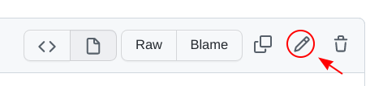
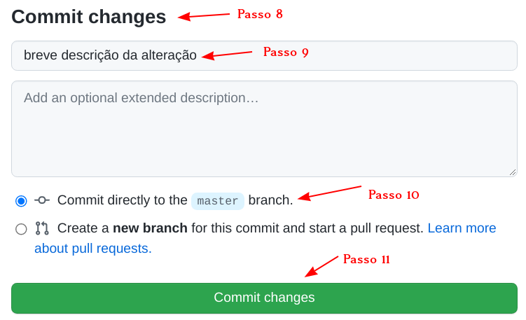

ASPJE - Página de Dicas
Principais arquivos
docs/ - Pasta principal
index.md - Página inicial
recurso.md - Informações sobre recursos
dicas.md - Página de dicas
img/ - Coloque suas imagens nesta pasta
Editando a página
- Acesse o endereço: https://github.com/PJeJE/dicas
- Faça login com o usuário da aspje.
- Clique na pasta docs.
- Clique no arquivo dicas.md.
- Clique no ícone do lápis (fica no cantor superior direito). 
- Edite o arquivo como desejar pela aba Edit file.
- Pela aba Preview changes, você pode visualizar como ficou antes de salvar as alterações definitivamente.
- Para salvar, desça a tela até ao final. Existe uma seção chamada Commit changes. 
- No primeiro campo, descreva de forma sucinta o que você alterou/incluir no arquivo.
- Deixe marcada a opção Commit directly to the master branch.
- Clique no botão Commit changes.
- Pronto! Dentro de 3 minutos a nova versão estará no ar!
Formatação Básica
Títulos, subtítulos, seções e subseções
# Título
## Subtítulo
### Seção
#### Subseção
Negrito e Itálico
**Texto em negrito**
*Texto em itálico*
Incluindo um link
[Página do TSE](http://www.tse.jus.br)
Exemplo:
Página do TSE
Incluindo uma imagem

Exemplo:
Obs. 1: A imagem deve estar na pasta img.
- Para enviar uma nova imagem do seu computador:
- Clique na pasta docs.
- Clique na pasta img.
- Clique no botão Add File.
- Selecione Upload files.
- Arraste a imagem do seu computador para a área indicada.
- Para salvar, desça a tela até o final, se necessário. Existe uma seção chamada Commit changes.
- No primeiro campo, descreva de forma sucinta o que você alterou/incluir no arquivo.
- As demais opções não precisam ser alteradas.
- Clique no botão Commit changes.
- Pronto!
Obs. 2: Atenção ao tamanho da imagem! Redimensione se necessário antes de incluí-la.
Obs. 3: O "texto alternativo" só aparece caso o navegador não consiga carregar a imagem ou é utilizado por programas de acessibilidade (Ex. Aplicativo que lê a página para cegos).